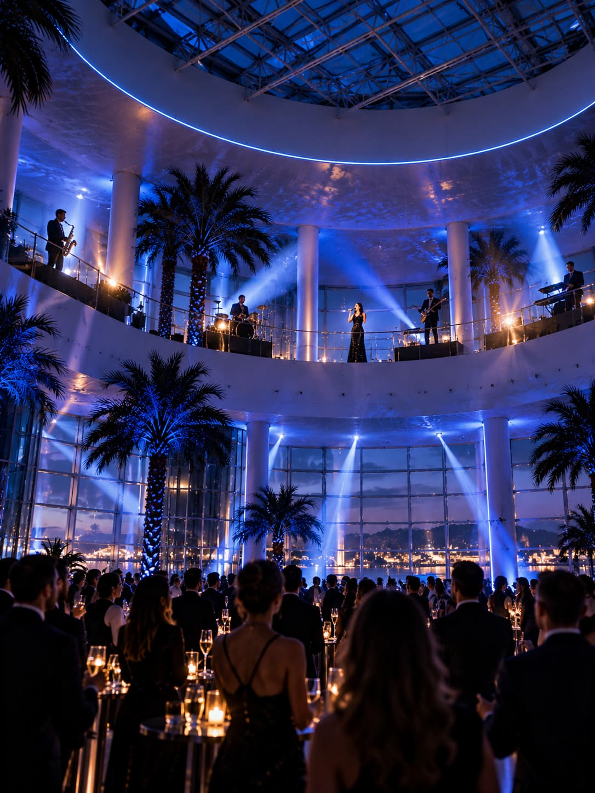
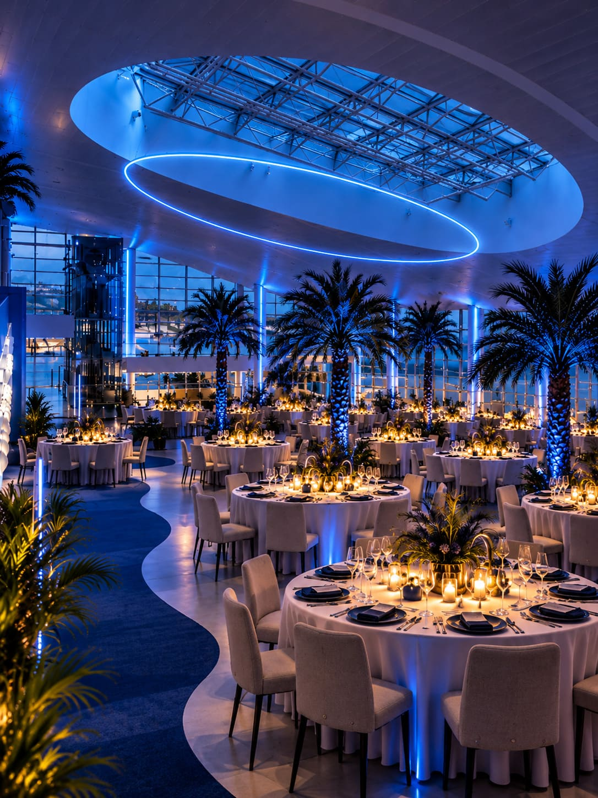

Proposal 03 · Industrial × transformation
TERMINAL D
PORT DE BARCELONA
THIS ISN`T A VENUE.
IT'S A BLANK CANVAS.
Why this place
NOTHING IS GIVEN.
EVERYTHING IS POSSIBLE.
Terminal D nos permite hacer algo que ningún otro venue puede ofrecer: construir THE METHOD prácticamente desde cero.
Una infraestructura portuaria de gran escala, industrial y aparentemente neutral se transforma, durante una sola noche, en el club secreto de los líderes del futuro.
Su ubicación en el Port, la escala del espacio y su enorme versatilidad nos permiten controlar el recorrido, la luz, el sonido, la tecnología y cada transición de la experiencia.

Concepto
ONE NIGHT.
ANOTHER WORLD.
Todo empieza como si se tratara de una llegada más. Los miembros abandonan el MWC y se dirigen hacia el Port de Barcelona sin saber exactamente qué van a encontrar.
Desde fuera, Terminal D sigue siendo una infraestructura portuaria. Sobria. Industrial. Casi neutral.
Pero detrás de sus puertas existe otro mundo. Durante unas horas, NTT DATA toma el control del espacio y lo convierte en un enclave reservado para quienes están pensando, liderando y construyendo lo que viene después.
La terminal no es el destino, es la tapadera.
Before the experience
WAIT FOR THE
SIGNAL.
La experiencia de THE METHOD comienza días antes de llegar al espacio.
Al entrar en su habitación de hotel, cada miembro encontrará un sobre reservado para él.
En su interior: un boarding pass personalizado con unas instrucciones muy concretas:
El día del encuentro deberá dirigirse a Terminal D, acceder utilizando su boarding pass y, una vez conseguido su sello, actuar con normalidad hasta recibir la señal.
Arrival · The secret location
YOU KNOW WHERE.
NOT WHAT.
Tras abandonar el MWC, los miembros se desplazan en autocar hacia el Port de Barcelona. La ciudad cambia progresivamente hasta dejar paso al paisaje industrial y marítimo del Moll Adossat.
Al llegar, nada parece indicar que está a punto de celebrarse un evento. Ningún gran cartel. Ninguna recepción evidente. Ningún punto de encuentro.
La misión es clara: pasar desapercibido hasta recibir la señal.

Access control
STAMPED
FOR ENTRY.

Nada en el espacio revela todavía que están entrando en una reunión de THE METHOD Society.
Cada miembro presenta el boarding pass que encontró previamente en su habitación. El equipo de acceso lo revisa como si se tratara de un embarque real.
Sin acreditaciones visibles. Sin pulseras. Sin ningún elemento que pueda delatar lo que está ocurriendo.
Solo un pequeño gesto confirma que están dentro del juego: el boarding pass queda sellado.
Welcome drink
ACT NORMAL.
WAIT FOR THE SIGNAL.
La terminal continúa funcionando con normalidad, como si nada estuviera ocurriendo.
Los miembros podrán moverse libremente por la terminal.
O acercarse a los stands que esconden puntos de comida y bebida preparados exclusivamente.
No tendrán que pagar: bastará con pronunciar discretamente una única palabra.THE METHOD.
Hasta que llegue el momento, la misión sigue siendo la misma: pasar desapercibidos.

CEO moment · The signal
YOU CAN STOP
PRETENDING.
Hasta ese momento, todo ha funcionado bajo una única regla: Act normal. Wait for the signal. Entonces, sucede.

Una voz rompe el sonido ambiente.
Desde la planta superior de Terminal D, un gran foco se enciende y descubre al CEO de NTT DATA, solo, con un micrófono frente a todos los asistentes.
Su mensaje es breve:
THE TERMINAL IS NOW CLOSED.
YOU CAN STOP PRETENDING.
Y con esas palabras, la tapadera desaparece.

Todo empieza a cobrar sentido.
La iluminación habitual se apaga progresivamente y grandes haces de luz azul recorren la arquitectura de Terminal D.
Al mismo tiempo, desde la planta superior se despliegan grandes lonas con el emblema de THE METHOD SOCIETY, revelando por primera vez la verdadera identidad del lugar.
Los stands, la cafetería, los desconocidos que esperaban alrededor... todo formaba parte de la misma tapadera.
THE COVER IS OVER.
THE METHOD SOCIETY IS NOW IN SESSION.
UAY Moment · The transformation
DON'T HIDE THE CHANGE.
MAKE IT THE SHOW.
El CEO termina su intervención. Durante unos segundos, silencio. Y entonces, empieza la música.

01 · Look up
THE TERMINAL BECOMES THE STAGE.
La música no llega desde un escenario.
Repartidos por diferentes puntos de la planta superior, cinco músicos y dos cantantes comienzan a tocar simultáneamente. Batería, saxo, guitarra, teclado y bajo se responden desde distintos puntos de la arquitectura.
Las voces aparecen entre ellos y, de repente, toda la Terminal se convierte en el escenario.

02 · Look around
WHILE EVERYONE LOOKS UP, SOMETHING STARTS BELOW.
Un equipo de 40 camareros perfectamente uniformados entra en escena de forma sincronizada.
Como si se tratara de un gran flashmob, comienzan a aparecer mesas ya vestidas, sillas y todos los elementos necesarios para construir la cena frente a los propios invitados.
Cada movimiento está coreografiado con la música. Entran las mesas. Aparecen las sillas. Se completan las posiciones.
El montaje no se esconde. El montaje es el espectáculo.
DESCUBRE EL EFECTO ↗
03 · The reveal
FROM TERMINAL TO PRIVATE DINNER.
Música, equipo, luz y movimiento trabajan como una única coreografía hasta que, con el último acorde, la transformación está completa.
Donde unos minutos antes había una terminal aparentemente convencional, ahora existe una cena privada preparada exclusivamente para 200 miembros.
THE TERMINAL WAS THE COVER.
THE TRANSFORMATION IS THE SHOW.
WELCOME TO THE METHOD SOCIETY.
Gala Dinner · The inner circle
FROM SHOW
TO DINNER.

El espectáculo se transforma naturalmente en cena.
Mientras la música continúa, los camareros reaparecen con las primeras bebidas y los miembros descubren progresivamente su lugar alrededor de la mesa.
Durante la velada, la banda sigue formando parte de la experiencia, alternando gastronomía, conversación y música en directo sin interrumpir el ritmo natural del encuentro.